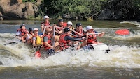

Salmon River Canyon
A classic full-day journey traversing dramatic basalt gorges. Ideal for mixed-level groups looking for steady action and breathtaking canyon panoramas.
- Difficulty: Class III - IV
- Duration: Full Day (6 hours)
- Minimum Age: 10+